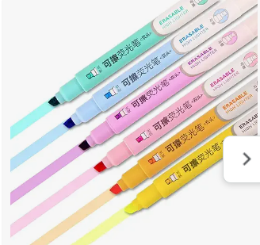

₹499/-
Brand: HUBTURE
Ink Colour: Multicolor
Number of Items: 1
Point Type: Chisel
Recommended Uses For Product: Coloring, Highlighting., Writing

About this item:
MATERIAL: Crafted with water-based ink that dries quickly to prevent smudges and stains.
FAST DRYING: Ink dries rapidly, minimizing the risk of seepage on the page or hands.
WIDE APPLICATION: Perfect for daily use in school, college, home, office, and travel for color-coding, highlighting diaries, planners, and more.
UNIQUE DESIGN: Features a pastel tip design with a narrow barrel for comfortable grip and reduced hand fatigue.
SET OF 6: Includes six pastel markers in different colors for versatile highlighting options.
FLUORESCENT INK: Offers high visibility without toxic chemicals, suitable for all paper types.
PRECISE TIP: Chiseled to a precise tip for flexible line widths and neat highlighting.